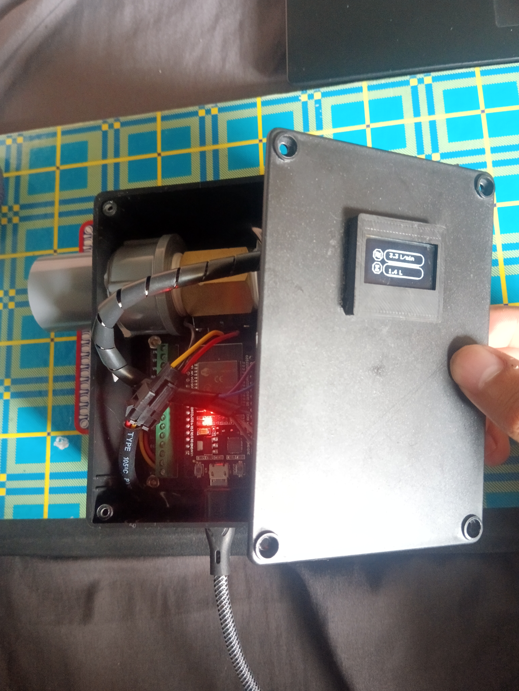
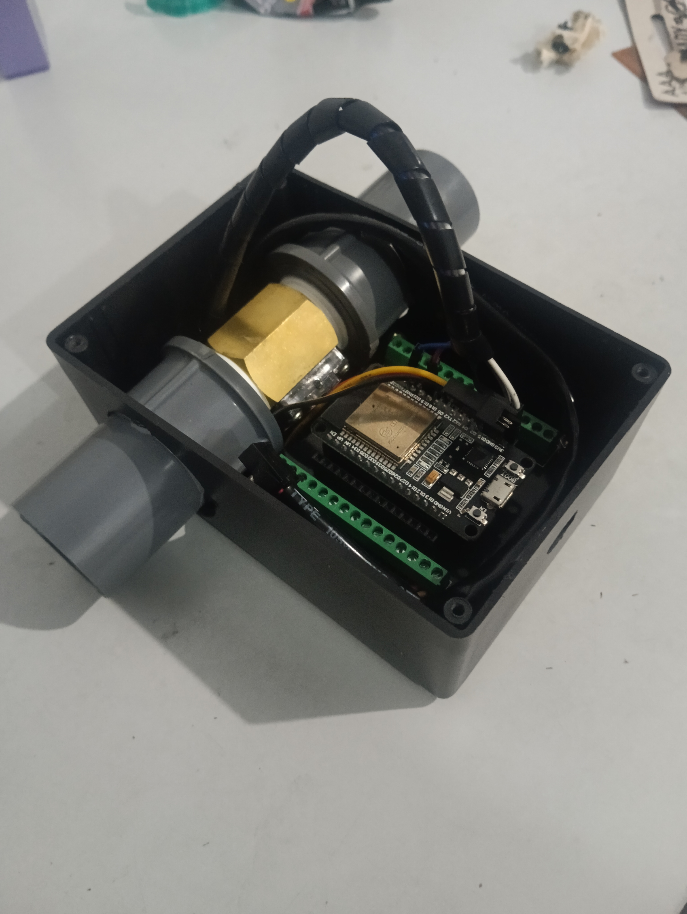
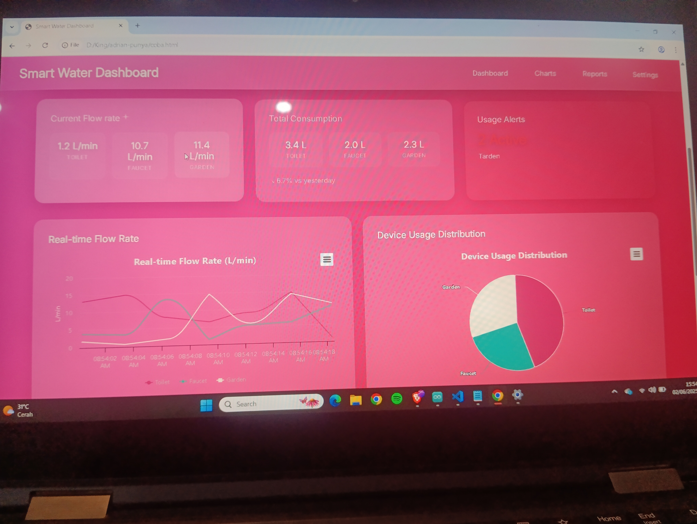
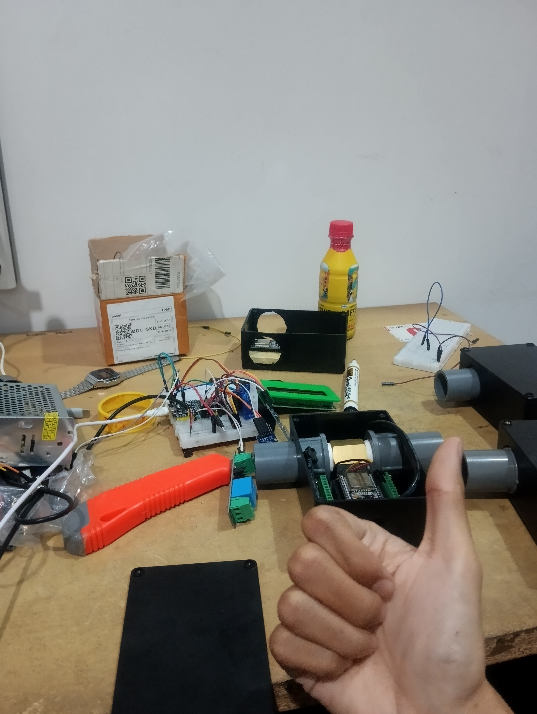
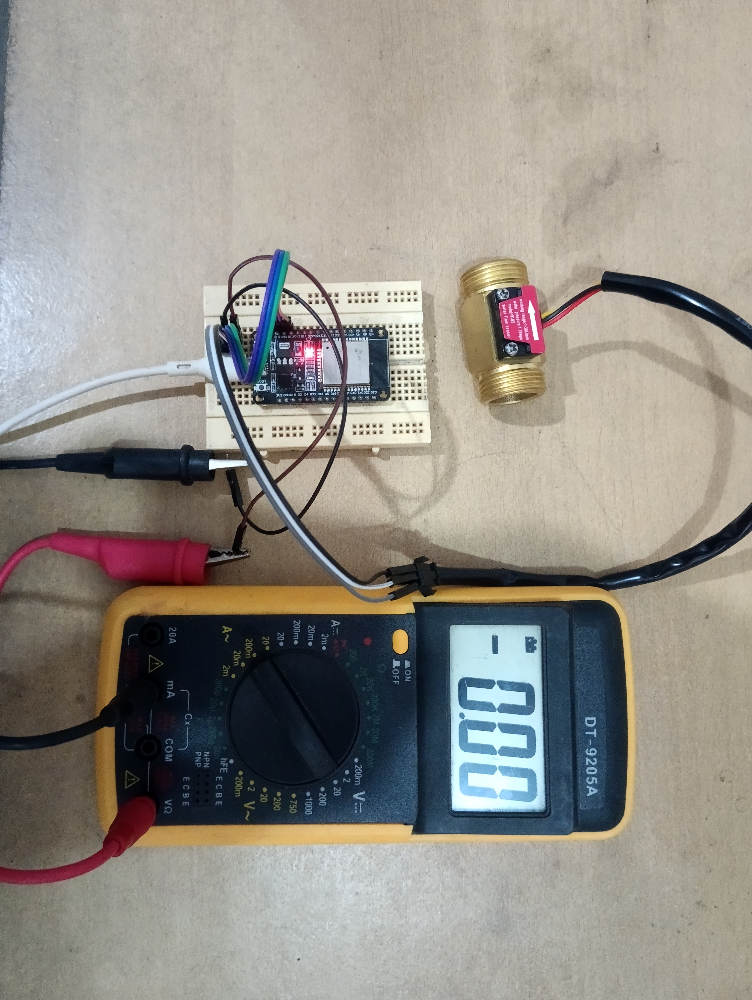
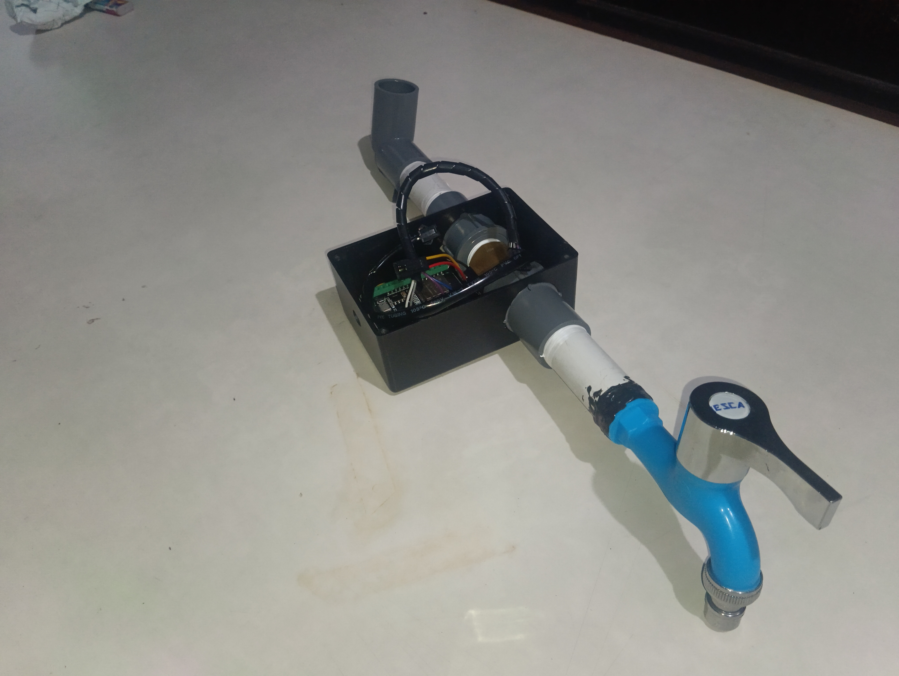

Overview
I designed and implemented a water monitoring system built on ESP32 microcontrollers and flow sensors. It tracks water usage as it happens, so consumption can be watched live and analyzed afterwards.
Hardware
Each sensor node pairs an ESP32 with a flow sensor on the water line. The ESP32 reads the sensor and passes the measurements on for display.

Firmware
I programmed the sensor nodes in Arduino C++ to collect two measurements accurately:
- Flow rate, how fast water is moving through the sensor right now.
- Total volume, how much has passed through in total.
Dashboard
I built a real-time monitoring dashboard with Highcharts to visualize and analyze the water consumption data.

Gallery



© 2026 Adrian Aryaputra